library(dplyr)
iris_mod <- iris |>
mutate(
Sepal.Area = Sepal.Length * Sepal.Width,
Petal.Area = Petal.Length * Petal.Width
)An Introduction to ggplot2
Introduction
Although base R contains plotting methods that are perfectly capable for most applications, its general rigidity and limited stylization options have led to an external package emerging as the go-to visualization tool for data scientists working in R. That package is ggplot2, a member of the tidyverse collection of data science tools.
ggplot2 is built on the logical principles of the “Grammar of Graphics”, a system for data visualization invented by the late professor Leland Wilkinson. The grammar hinges on the idea that all static visual graphs can be constructed from the same three aspects:
- A data set
- A coordinate system
- A geom - a visual object representing data points
Plotting in ggplot2 is as simple as constructing these aspects in a specified order with specified details, and this article will teach you how to develop familiarity with the package.
Building a ggplot Object
Let’s follow a basic example of the process of building an object in ggplot2. Let’s say I am studying the iris dataset and have come upon the following question: “How do sepal and petal size vary by plant species, and how can I visualize that in a way that shows every data point?” First, we will need to manipulate our dataset. iris does not contain variables for overall size of sepals or petals, so let’s use dplyr to create a new variable for sepal/petal area.
If the transformation in the above section looks unfamiliar, you may want to read this short article on the package before you continue reading this one.
Next, let’s break this question down into its associated ggplot2 elements.
- Dataset (
data):iris_mod - Coordinate System (
aes()):- x =
Sepal.Area - y =
Petal.Area - color =
Species
- x =
- Geom:
geom_point() - Labels (
labs) (optional):- title =
"Sepal Area vs Petal Area by Flower Species" - subtitle =
"Area = Length * Width" - caption =
"data: iris"
- title =
- Theme (optional):
theme_minimal()
Now, let’s put it all together into a final plot. Assembling plots in ggplot2 is as simple as building elements and adding them together with the + symbol.
library(ggplot2)
ggplot(
data = iris_mod,
mapping = aes(x = Sepal.Area, y = Petal.Area, color = Species)
) +
geom_point() +
labs(
title = "Sepal Area vs Petal Area by Flower Species",
subtitle = "Area = Length * Width",
caption = "data: iris"
) +
theme_minimal()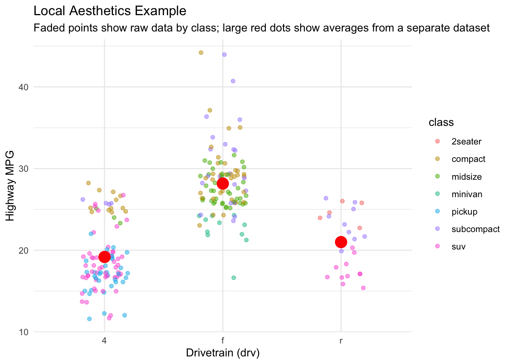
Now that you have an understanding of the basics, the rest of this article will dive further in depth on each aspect of a plot building on these core concepts.
Defining Aesthetic Values
Aesthetics are variables within a ggplot object that take on different visual manifestations depending on the type of geom used in the plot. Types of aesthetic variables include:
- Axis variables, such as
x,yandz - Chromatic variables, such as
fillandcolor - Stylistic variables, such as
size,shape,linewidth, andlinetype
When building visuals in ggplot2, aesthetic variables can be left static across geoms or defined individually. In many cases, it can be easiest to leave globally inherited aesthetic variables. However, in some situations, such as using different datasets on different geom objects, aesthetic values must be defined on an individual basis.
Globally Defined aes Values
library(ggplot2)
ggplot(data = mpg, aes(x = displ, y = hwy, color = drv)) +
geom_point(alpha = 0.6) +
geom_smooth(method = "lm", se = FALSE) +
labs(
title = "Global Aesthetics Example",
subtitle = "Both points and trend lines inherit the 'drv' color mapping",
x = "Engine Displacement (L)",
y = "Highway MPG"
) +
theme_minimal()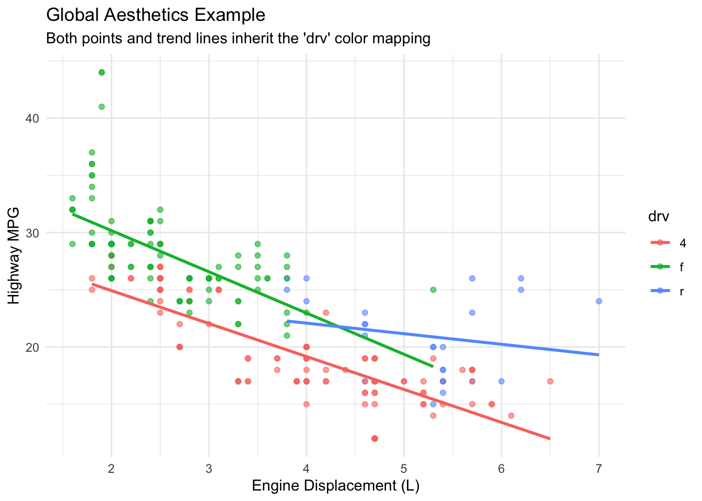
Locally Defined aes Values
library(ggplot2)
library(dplyr)
mpg_summary <- mpg |>
group_by(drv) |>
summarize(avg_hwy = mean(hwy))
ggplot() +
geom_point(
data = mpg,
aes(x = drv, y = hwy, color = class),
position = position_jitter(width = 0.2),
alpha = 0.5
) +
geom_point(
data = mpg_summary,
aes(x = drv, y = avg_hwy),
color = "red",
size = 5
) +
labs(
title = "Local Aesthetics Example",
subtitle = "Faded points show raw data by class; large red dots show averages from a separate dataset",
x = "Drivetrain (drv)",
y = "Highway MPG"
) +
theme_minimal()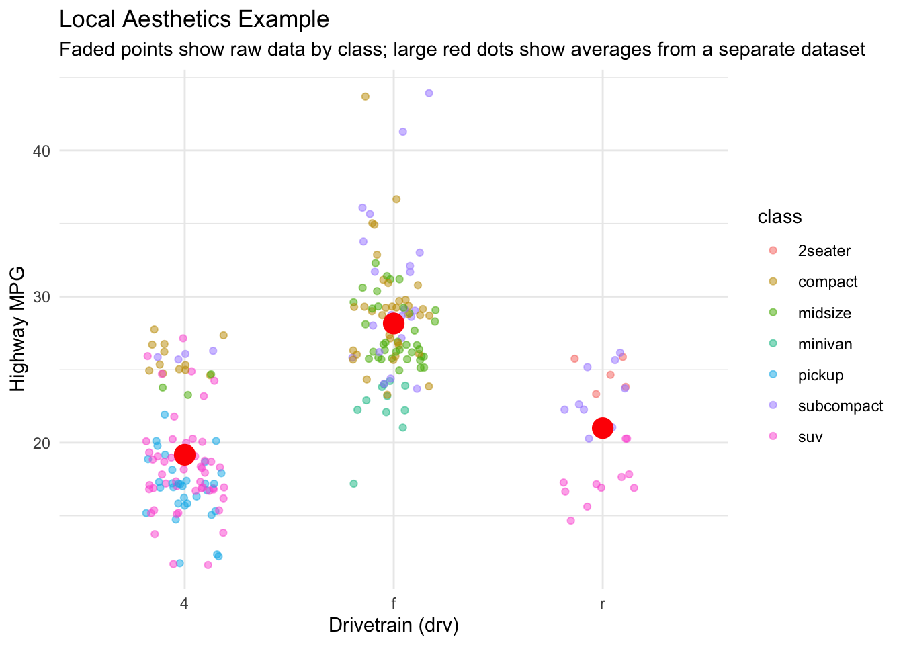
As you may have noticed in the above examples, aesthetic variables don’t always have to be defined in the aes() function. If you are adding a geom element to a visual and want any of its aesthetic factors to be statically defined without connection to a variable, simply define the value(s) in the geom’s master method. Ex:
# I want every point in a scatter plot to be:
# Large, Transparent, Blue, Diamond-Shaped
ggplot(iris, aes(x = Sepal.Width, y = Sepal.Length)) +
geom_point(color = "darkblue", alpha = 0.5, shape = "diamond", size = 5) +
theme_minimal()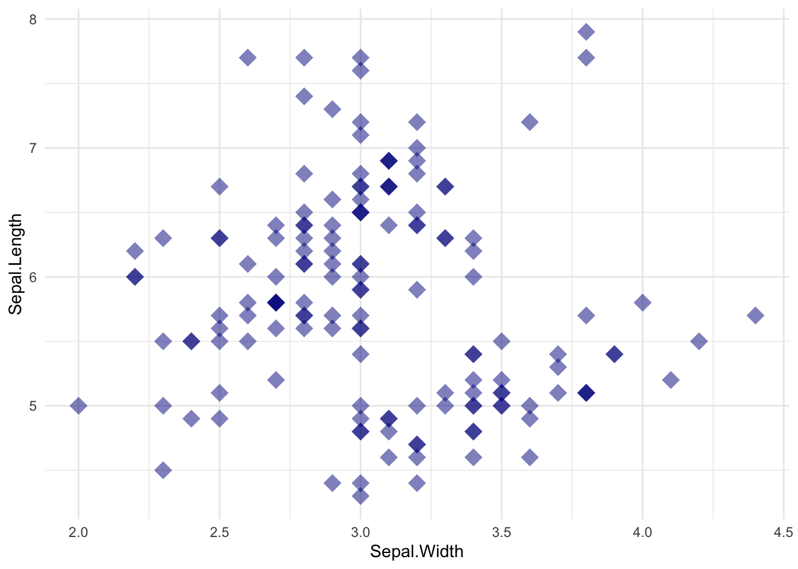
Key geom Functions
One Quantitative Variable
library(ggplot2)
c <- ggplot(mpg, aes(x = hwy)) + theme_minimal()
# Histogram
c + geom_histogram() + labs(title = "Histogram of Hwy MPG")
# Density
c + geom_density() + labs(title = "Density Plot of Hwy MPG")
# Dot Plot
c + geom_dotplot(dotsize = 0.5) + labs(title = "Dot Plot of Hwy MPG")
# Area Plot
c + geom_area(stat = "bin") + labs(title = "Area Plot of Hwy MPG")

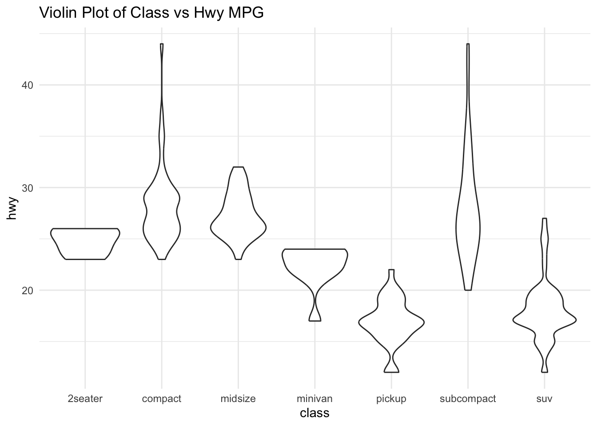
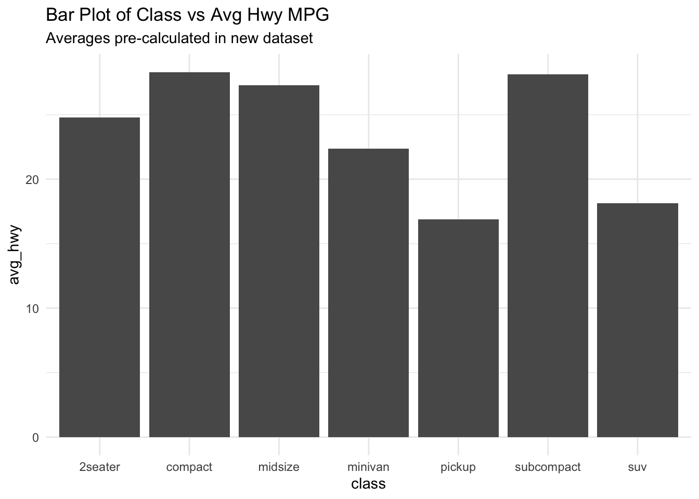
Two Quantitative Variables
library(ggplot2)
e <- ggplot(mpg, aes(x = cty, y = hwy)) + theme_minimal()
# Scatter Plot
e + geom_point() + labs(title = "Scatter Plot of Cty vs Hwy MPG")
# Labeled Scatter Plot
e + geom_label(aes(label = model)) + labs(title = "Labeled Scatter Plot of Cty vs Hwy MPG")
# Smoothed Plot
e + geom_smooth() + labs(title = "Smoothed Plot of Cty vs Hwy MPG")
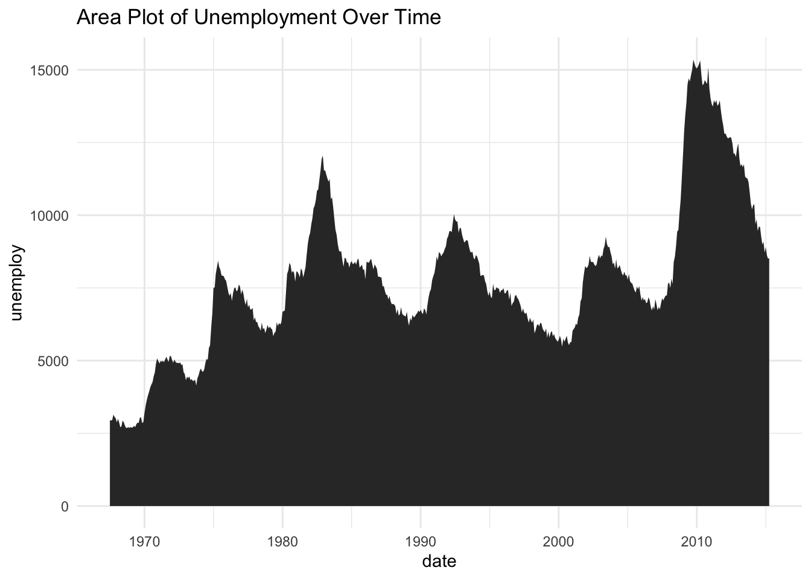
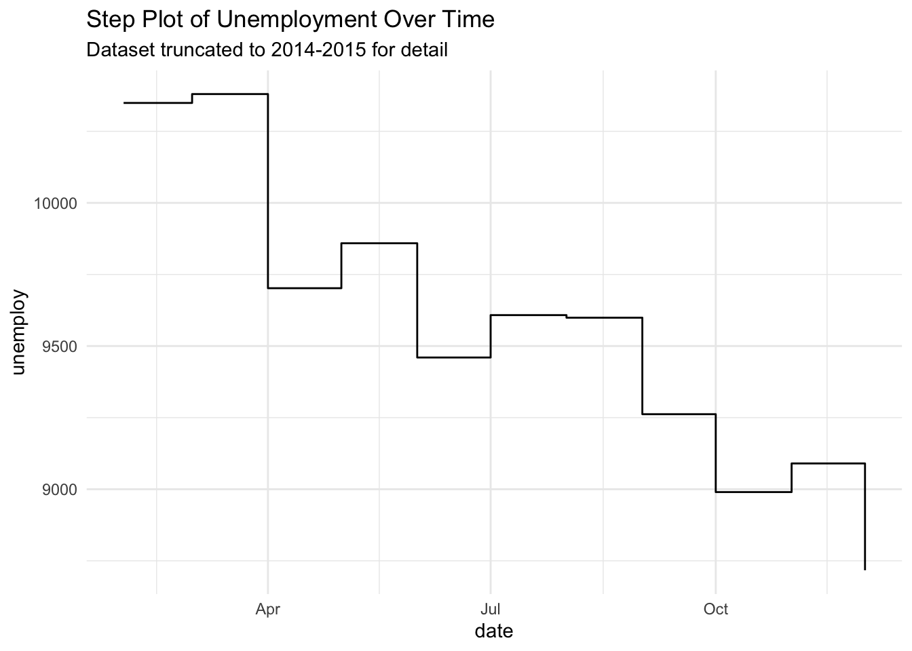
One Quantitative, One Qualitative
library(ggplot2)
library(dplyr)
f <- ggplot(mpg, aes(x = class, y = hwy)) + theme_minimal()
f_alt <- mpg |>
group_by(class) |>
summarize(avg_hwy = mean(hwy)) |>
ggplot(aes(x = class, y = avg_hwy)) + theme_minimal()
# Boxplot
f + geom_boxplot() + labs(title = "Boxplot of Class vs Hwy MPG")
# Dot Plot
f + geom_dotplot(binaxis = "y", stackdir = "center", dotsize = 0.5) +
labs(title = "Dot Plot of Class vs Hwy MPG")
# Violin Plot
f + geom_violin(scale = "area") + labs(title = "Violin Plot of Class vs Hwy MPG")
# Bar Plot
f_alt + geom_col() + labs(title = "Bar Plot of Class vs Avg Hwy MPG", subtitle = "Averages pre-calculated in new dataset")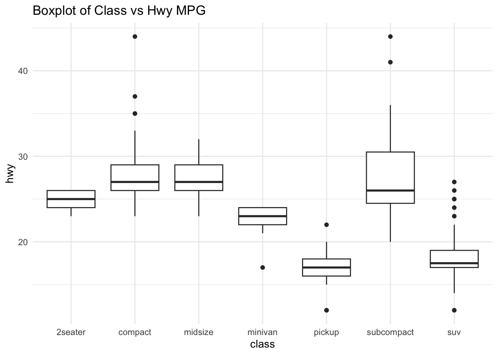
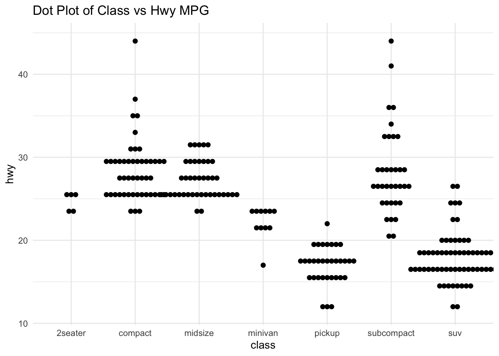


One Time Series, One Quantitative
library(ggplot2)
i <- ggplot(economics, aes(x = date, y = unemploy)) + theme_minimal()
i_alt <- economics |>
filter(date < as.Date("2015-01-01") & date > as.Date("2014-01-01")) |>
ggplot(aes(x = date, y = unemploy)) + theme_minimal()
# Line plot
i + geom_line() + labs(title = "Line Plot of Unemployment Over Time")
# Area plot
i + geom_area() + labs(title = "Area Plot of Unemployment Over Time")
# Step plot
i_alt + geom_step() + labs(title = "Step Plot of Unemployment Over Time", subtitle = "Dataset truncated to 2014-2015 for detail")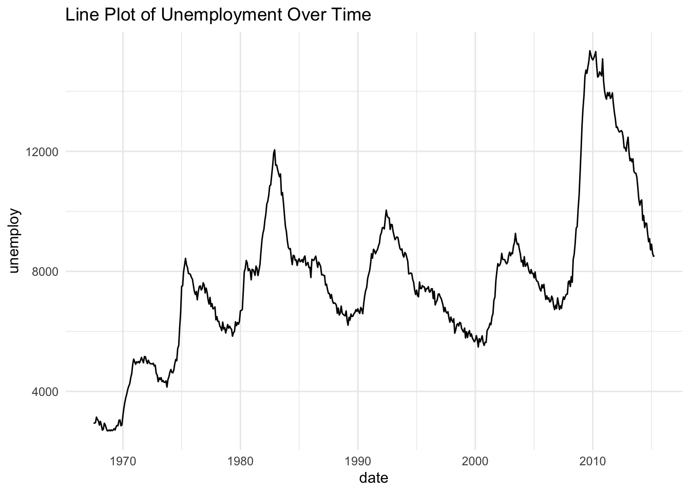
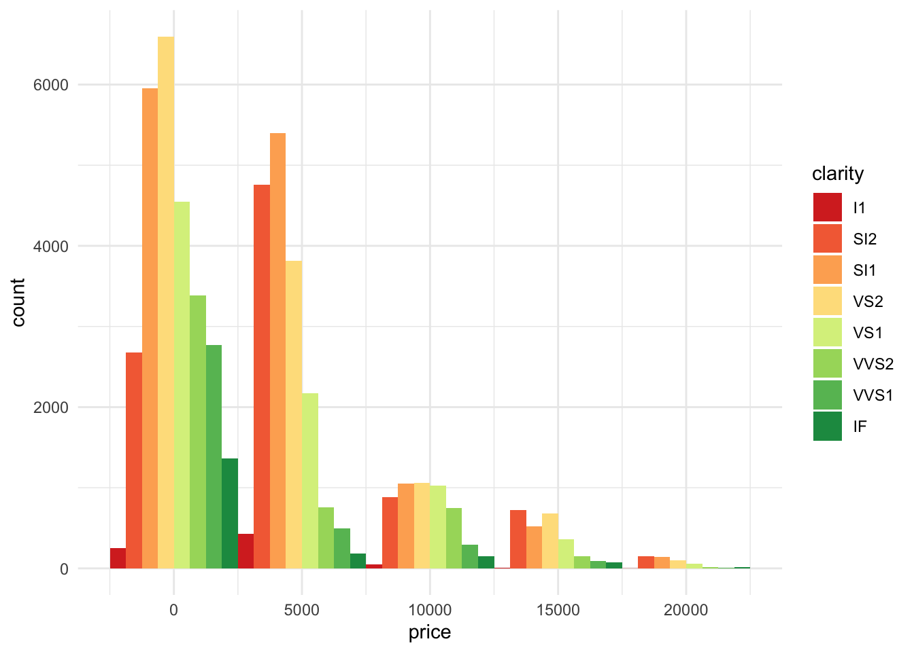

Visual Adjustments
ggplot2 offers multitudes of options in how it frames a visual. It is valuable to have an understanding of these capabilities when you are building plots of your own so that you can make adjustments to match your vision.
General Purpose Scales
Scales manually adjust the way that data values are mapped to aesthetic values. They also allow for greatly increased customizability compared to inherited scaling factors that many visuals will contain by default. Below are some visual examples of general purpose scales in action:
library(ggplot2)
s <- ggplot(mpg, aes(y = hwy)) + theme_minimal()
s +
geom_point(aes(x = displ), alpha = 0.5) +
scale_x_continuous(breaks = c(2, 4, 6), labels = c("Small (2L)", "Medium (4L)", "Large (6L)")) +
labs(title = "1. Continuous Scale", x = "Engine Displacement")
s +
geom_boxplot(aes(x = drv)) +
scale_x_discrete(limits = c("r", "f", "4"), labels = c("Rear", "Front", "4-Wheel")) +
labs(title = "2. Discrete Scale", x = "Drivetrain")
s +
geom_point(aes(x = displ), alpha = 0.5) +
scale_x_binned(n.breaks = 5) +
labs(title = "3. Binned Scale", x = "Binned Engine Displacement")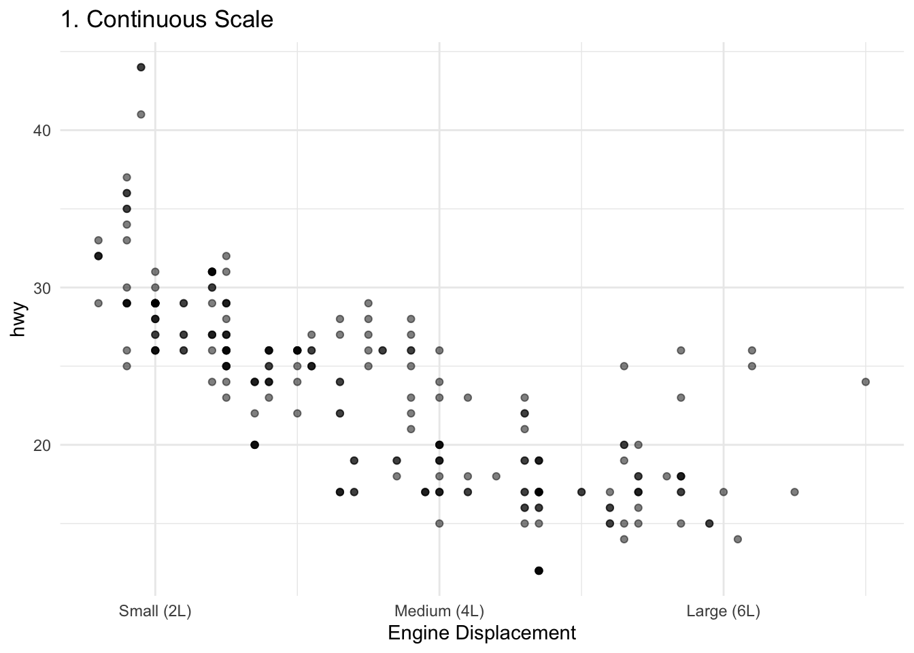
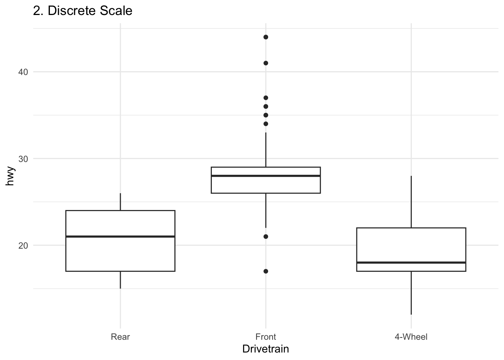
Scales applied to the x- or y-axis can also be combined with numerical location scales such as scale_x_log10(), scale_x_sqrt(), and scale_x_reverse() to reframe axes using alternative methods.
It is valuable to know the distinct parameters of the scale object you are using, as you may want to modify them to create a flawless representation of your data. If you are working with a scale and need to know its parameters, finding them is as simple as searching for the function on the ggplot2 website.
Color and Fill Scales
If you are using the fill or color aesthetics in a visual and want greater control over how colors manifest from your data, there are many scale functions that can help.
For categorical variables, we can add discrete color assignments using ColorBrewer, an online tool that provides visually pleasing color palettes. Check out ColorBrewer and its wide array of palettes here.
library(ggplot2)
# Sequential Variable - Cut Quality of a Diamond
ggplot(diamonds, aes(x = price, fill = cut)) +
geom_histogram(position = "dodge", binwidth = 5000) +
scale_fill_brewer(palette = "Purples") +
theme_minimal()
# Diverging Variable - Clarity Quality of a Diamond
ggplot(diamonds, aes(x = price, fill = clarity)) +
geom_histogram(position = "dodge", binwidth = 5000) +
scale_fill_brewer(palette = "RdYlGn") +
theme_minimal()

Many customization options for continuous fills are available as well, including but not limited to:
scale_fill_distiller()- applies continuous hue based on the palettes available on ColorBrewer - e.g.(palette = “Blues”)scale_fill_gradient()- applies a gradient between two color values to the minimum and maximum values for the chosen variable - e.g.(low="red", high=“yellow")scale_fill_gradient2()- applies a gradient between three color values to the minimum, midpoint, and maximum values for the chosen variable - e.g.(low = "red", high = “blue”, mid = "white", midpoint = 0.5)
Position Adjustments
If you are having trouble with elements in a visual overlapping, you might want to adjust the position value of the geom.
| Position Value | What It Does | Common Geom Types |
|---|---|---|
"dodge" |
Arrange elements side by side. | geom_bar(), geom_col() |
"fill" |
Stack elements on top of one another with normalized height. | geom_bar(), geom_col(), geom_area() |
"jitter" |
Add random noise to the position of each point to avoid overlap. | geom_point(), geom_jitter() |
"nudge" |
Nudge labels away from points. | geom_label(), geom_text() |
"stack" |
Stack elements on top of one another. | geom_bar(), geom_col(), geom_area() |
Theming
While ggplot2 contains many themes of its own, many external packages also exist that provide unique, stylized themes. Below are just a handful of the themes you could choose from when assembling your visuals.
library(ggplot2)
library(ggthemes)
p <- ggplot(mtcars, aes(x = mpg, fill = as.factor(cyl))) +
geom_density(alpha = 0.7)
p + labs(title = "Default Theme")
p + theme_minimal() + labs(title = "Minimal Theme")
p + theme_bw() + labs(title = "B&W Theme")
p + theme_void() + labs(title = "Void Theme")
p + theme_base() + labs(title = "ggthemes Base Theme")
p + theme_calc() + scale_fill_calc() + labs(title = "ggthemes Calculator Theme")
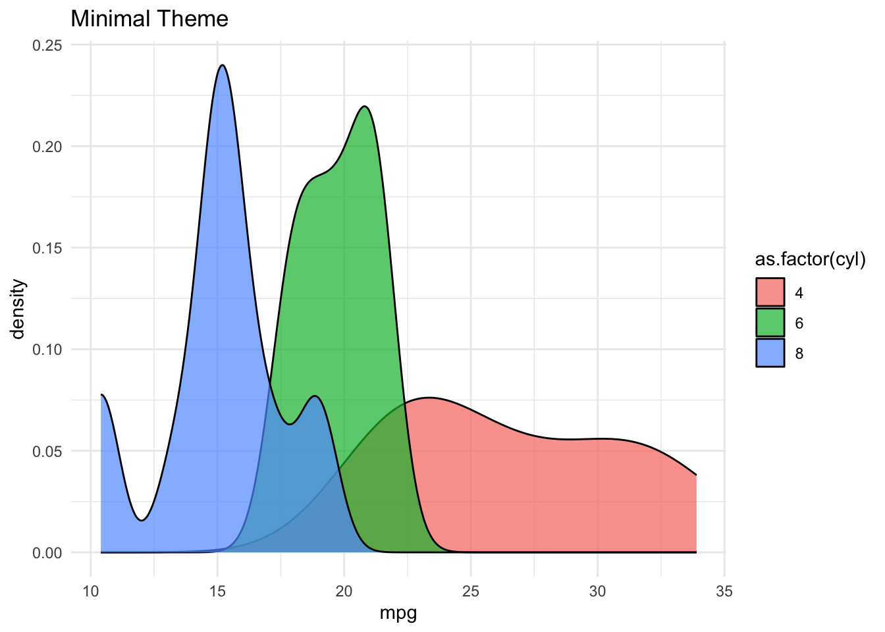

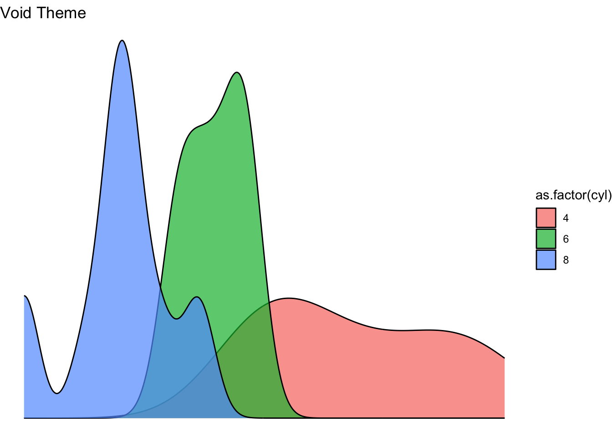
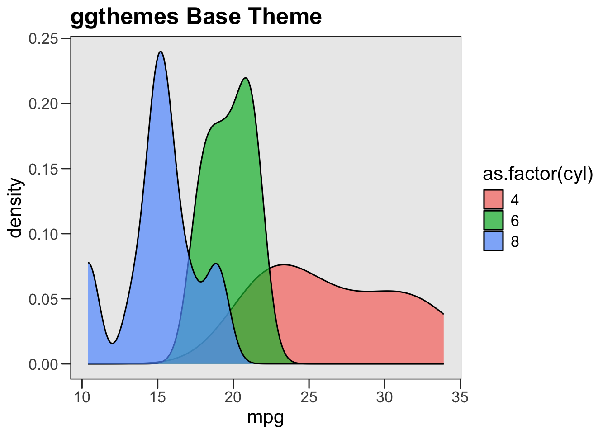
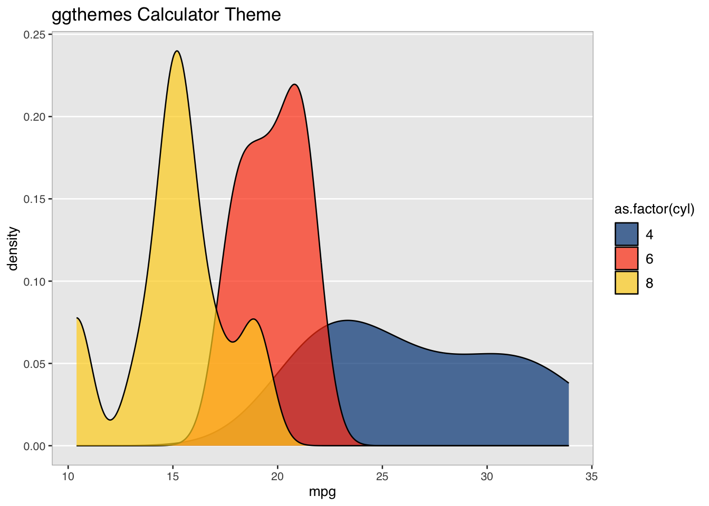
It is also worth noting that you can tweak components of a theme to your preference using the theme() function. Nearly every detail in a plot can be manually adjusted using this method, from text elements to tick marks to legends.
If you find a modification to a theme that you reuse consistently and want to reference it with ease, you can store the original theme and its changes to an object in your workspace and add it to plots later, as shown below.
library(ggplot2)
custom_theme <- theme_minimal() +
theme(
plot.title = element_text(size = 16, face = "bold", hjust = 0.5),
)
ggplot(mpg, aes(x = displ, y = hwy)) +
geom_point() +
labs(title = "displ vs hwy") +
custom_theme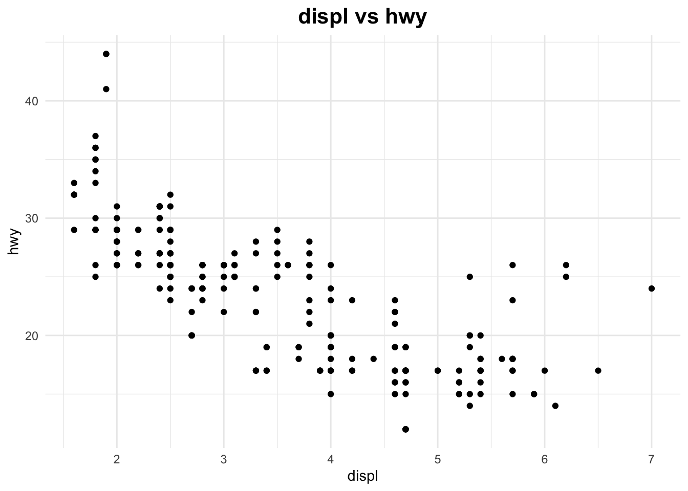
Faceting Plots
If you are building a visual with too much information clustered together to easily interpret, you may want to consider breaking it down into facets. Facets divide a plot into subplots based on the values of one or more discrete variables. The table below explains the two main methods of faceting plots and their differences.
| Facet Wrap | Facet Grid | |
|---|---|---|
| Input | 1 variable | 2 variables |
| What it does | Builds separate plots for each variable value and lists prints them side-by-side | Builds a matrix from the values of both variables |
| Syntax | facet_wrap(~ var) |
facet_grid(row_var ~ col_var) |
| Empty value handling | Omits variables with no values | Includes all variables, including empty ones |
Facet Wrap - Best for a Single Variable
library(ggplot2)
# Splits the scatter plot into separate panels for each car class
ggplot(mpg, aes(x = displ, y = hwy)) +
geom_point() +
facet_wrap(~ class) +
theme_minimal()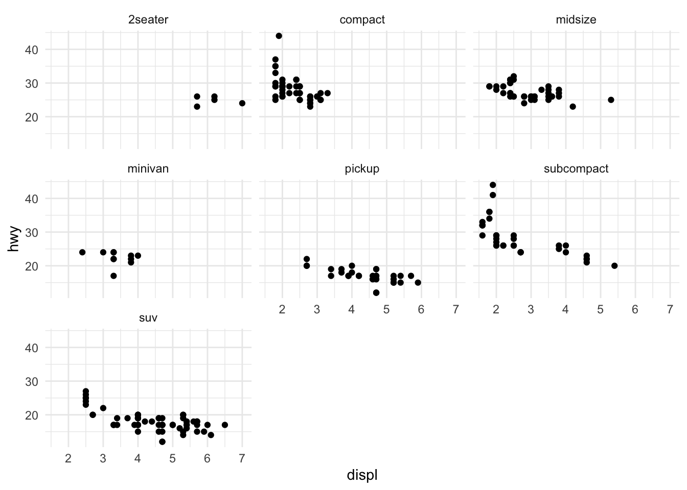
Facet Grid - Best for Cross-Tabulating Two Variables
library(ggplot2)
# Creates a grid where rows = drv and columns = cyl
ggplot(mpg, aes(x = displ, y = hwy)) +
geom_point() +
facet_grid(drv ~ cyl, labeller = label_both) +
theme_minimal()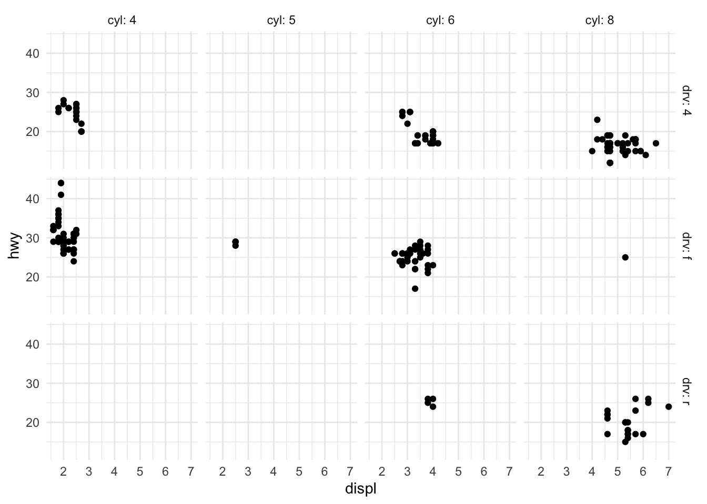
In short, if you would like to divide a plot along variable lines, consider faceting it.
Learn More
If you would like to learn more about ggplot2, visit its website for more information.
Disclaimer
Most of the information in this article was inspired by this source PDF from Posit’s cheat sheet library.